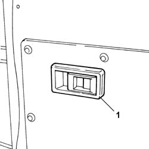
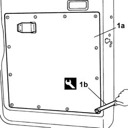

7020E34 REAR DOOR FLAP INTERIOR PANEL - R+R
- Path
- Procedures > 70 FITTINGS > 7020 LOAD COMPARTMENT DOORS > 7020E REAR SWINGING DOOR > 7020E34 REAR DOOR FLAP INTERIOR PANEL - R+R
- Kind
- repair procedure (removal / refitting; the operation number is the code)
- Applies to
- all engines; all production periods
- Interactive page
- https://sloeber94.github.io/elrnDB-fDct/en/#/244001473
Applies to: all engines; all production periods
 Removing
Removing
 Refitting
Refitting1. Release the door opening control lever trim from the retaining springs.

Applies to: all engines; all production periods
1. Using the tool (1b), separate the door panel trim (1a) working on the retaining springs along the entire perimeter.
 | Description | Code | Function |
|---|---|---|---|
1b | Knife | 1.878.077.000 | Remove springs |

Applies to: all engines; all production periods
Refitting
Removing- Position the panel and secure it attaching the retaining springs.
- Fit the door opening control lever trim attaching the retaining springs.